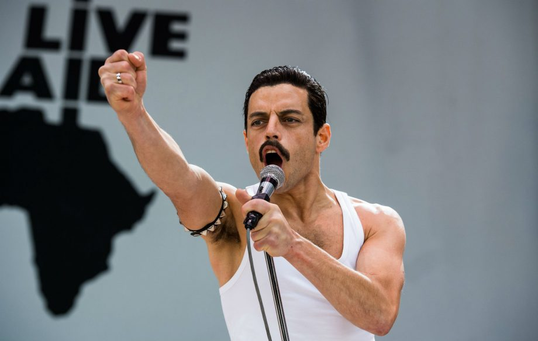

History
Queen are a British rock band formed in London in 1970.
Their earliest works were influenced by
progressive
rock, hard rock and heavy metal, but the band gradually ventured into more conventional and radio-friendly
works by incorporating further styles, such as arena rock and pop rock.
Some of their most popular songs are:
- Bohemian Rhapsody
- I Want To Break Free
- Radio Ga Ga
- We Are The Champions
- and many others
Here is a list of their studio albums:
| Title | Released | Peak chart position (UK) |
|---|---|---|
| Queen | 13 July 1973 | 24 |
| Queen II | 8 March 1974 | 5 |
| Sheer Heart Attack | 8 November 1974 | 2 |
| A Night At The Opera | 21 November 1975 | 1 |
| A Day At The Races | 10 December 1976 | 1 |
To learn more about the history of Queen click HERE
Line-up
- Freddie Mercury (lead vocals and piano)
- Brian May (lead guitar and vocals)
- Roger Taylor (drums and vocals)
- John Deacon (bass guitar)
Before forming Queen, May and Taylor had played together in the band Smile.
Mercury was a
fan of
Smile and encouraged them to experiment with more elaborate stage and recording techniques.
He
joined in
1970 and
suggested the name "Queen".
Deacon was recruited in March 1971, before the band released their
eponymous
debut album in 1973.
Queen first charted in the UK with their second album, Queen II, in
1974.
Sheer Heart Attack later that year and A Night at the Opera in 1975 brought them
international
success.
Bohemian rhapsody - a tribute
Bohemian Rhapsody is a 2018 biographical drama film about Freddie Mercury, the lead singer of the British
rock band Queen.
It was directed by Bryan Singer from a screenplay by Anthony McCarten, and produced by
Graham King and Queen manager Jim Beach.
The film was released in the United Kingdom on 24 October 2018
and
in the United States on 2 November 2018.
It received mixed reviews from critics; its portrayals of
Mercury's
sexuality and lives of the other band members were criticised, but Malek's performance and the music
sequences received praise.
The film also contains a number of historical inaccuracies.
It became a
major box office success, grossing over $903 million worldwide on a production budget of
about $50 million,
becoming the sixth-highest-grossing film of 2018 worldwide and setting the all-time box office records for
the biographical film and drama genres.